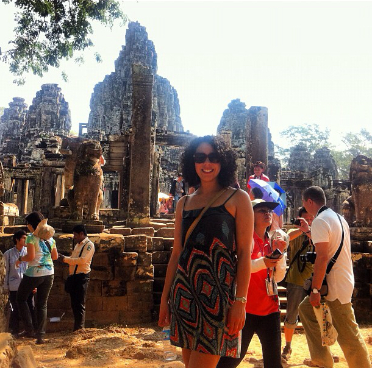
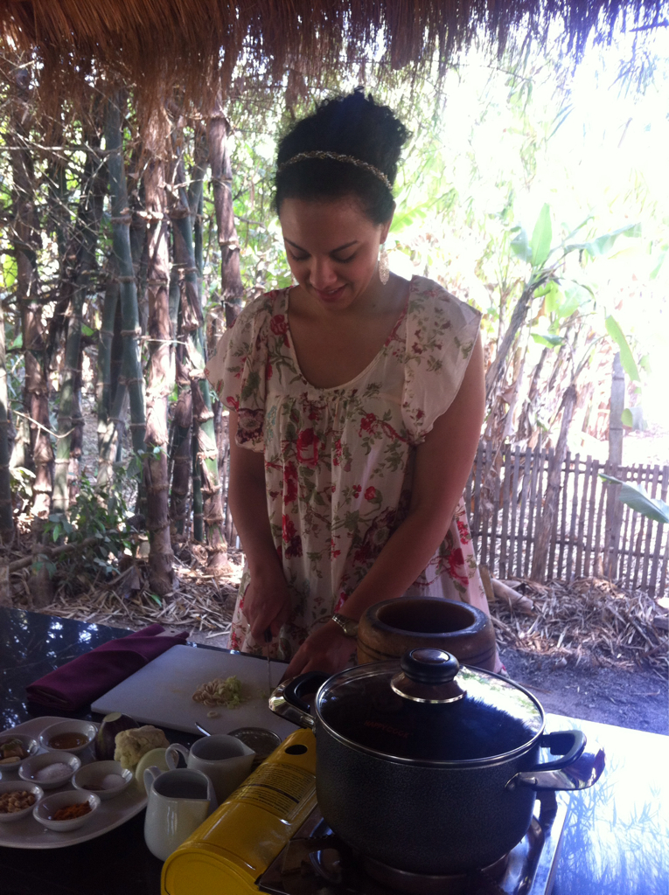

Siem Reap
Waking up is hard to do...
It is! Some days you just want to hang out in bed. And not sightsee. And lay there. Leisurely. Well, Saturday was one of those days. Maybe it was the bed, maybe it was the fact that we had walked for twelve hours straight. Maybe we will never know.
I had planned to take Lauren's advice (the world is Lauren's oyster, if you have yet to notice...) and take in Jim Thomspon's house and Chatutchak Market (as it was the weekend and all) but I'm going to try transparency with you. If one more person asks me... to take a ride on their tuk tuk or offers me 84 bracelets for a dollar or wants a coin from my homeland, we may have an international incident on our hands. I appreciate they're trying to make some dough around these parts but give. it. a. rest! Most seriously.
So, instead of the aforementioned activities, I decided I wanted another foot massage. I didn't have the time to get to my little spot from the other night, so I hopped downstairs and slid into the first place I saw. The resulting oils on my feet didn't bode well for my walking situation BUT I had my Greek sandals on with backs and this proved promising... though I still did err on the side of caution and walked completely at odds with normalcy. I wouldn't call it walking, really. On the tips of my toes I sort of, I guess, tipped lightly. It wasn't attractive, no. Let's just say it was John Waynesque.
Back in time to swoop up my belongings and a taxi to the airport, I was off and on my way to Siem Reap. Upon arrival I thought I had died and LITerally gone to heaven. The airport itself looked like a resort straight out of Tahoe. I'm not sure where Immigration was because as soon as I picked up my bag, I was outside. It's not the biggest place.
On my way to the Angkoriana (Angkor's now-closed Boutique Hotel!), my shuttle driver, Mr. P, talked me into a number of activites that quickly filled up my two and a half days here. Arriving at 4.30p, I was off again in my personal tuk tuk at 6.30 for dinner and a show. This one was amazingly beautiful! When telling me about the traditional nature of the event, Mr. P highlighted that it was two hours of dancing for $12, dinner was included. All I heard? All you can eat buffet dinner for 12 American dollars! (and a free show included) It was magnificent and a must-see for sure.
I headed home and arranged for Pitorn, my tuk tuk driver, to swipe me up at 8.30 the next morning. After a lovely breakfast by the pool, we were off to take in the majesty that is Angkor Wat along with the historic ruins of Angkor Tom, Ta Prohm, and Preah Khan. Angkor means "temple city" and there are believed to be over one thousand temples in the area; Angkor Wat itself being the single largest religious site in the world. Built initially to house the god Shiva, it transitioned to being a Buddhist temple when the reigning monarch switched religions circa 1181 ("Angkor" is Hindu, "Wat" Buddhist for temple)
These sights were beautiful. Ta Prohm is where part of Tomb Raider was shot (hey, Lara Croft, I see you in that tree!) and the mere idea that this was once the largest preindustrial city in the world (and may have supported up to one million people!) is fascinating. The only way I would recommend seeing this sprawling landscape would be via tuk tuk. With warm air blowing and the sounds of Siem Reap whizzing by, it doesn't get better than that.
Being that I'm an extreme sightseer (in the timing sense), we were done with my tour and a light Cambodian lunch by 1.30p. I decided to keep it lowkey at the hotel with some time at the pool, a back massage in a nearby cabana, and a traditional dinner of lak luk... and crocodile! EEEK! It tasted like chicken. I'm not sure it wasn't...
After that I packed some things up and settled in for the night. Early to bed, early to rise... this is a mantra that I have come to love over these last two weeks because I, just simply, love the morning. Please remember this for the future. I'm owning it. I like going to bed early, I like waking up to enjoy the first lights of day. After all, some days it's just not easy waking up at all and you've got to prepare for them...
The way to a woman's heart is most definitely through her stomach
Please and thank you, flowers and chocolates I do not need. (Though I wouldn't mind shoes as Etta James sang...) But food will always (aaaaaaaaaaaaalways) win this girl over.
So, with that in mind, I opted for a quieter day today. It was, by far, my most relaxing but productive day yet. Tired of sightseeing and always being on the go, I opted for a quiet morning and breakfast by the pool and a walk into town to visit the post office. I needed to get a few postcards out (Jason, Debs, Suse and Mark, 301 look out!) and wanted to go and see a bit of Siem Reap's more current state. And adorable it was! Cute restaurants, shops, and a lively downtown would encourage anyone passing through to slow down and stay awhile. It was nice, too, to get into the culture, if only for an hour, instead of being the consummate tourist.
I was back at the hotel and checked out by noon, however, because I had signed up for a real life Cambodian cooking class! Oh my gosh this is a must do. I know they have them in Thailand as well but this one was absolutely off the charts. I met up with Louise (Lou) and Daniel at another hotel and we tuk tuked it over to the Sojourn Hotel and Cambodian Cooking Class (an expertly descriptive name). Lou and Daniel were on holiday from their recently concluded university studies and had been in Cambodia for two and a half weeks and they were loving it!
Anyway, after meeting a local family and learning about how the organization is helping the local community, and seeing how food is grown and harvested, we started our class. Perfect for beginners and experts alike, we created our own mid-afternoon lunches out of scratch! Over the course of two hours, we handily made a chicken curry (omg delicious and perfectly seasoned if I may boast), fresh spring rolls with our own homemade peanut sauce (much better than my Pagolac disaster, ckpy), and a something cake. I can't remember what it's called but it was so tasty. For the first time I worked a mortar and pestle and loved it... though the sudden movement of the whole process reminded me completely of handling a Shake Weight. Uuuumm, no thank you.
After we were finished with our toils, we headed out to a little hut over a miniature pond to enjoy our feast. I talked to Lou and Daniel about what to do in Australia since they were from Tazmania and I'm on my way there tomorrow! What a small world... well, that and the fact that Aussies are stinking everywhere. They were simply delightful to share the day and meal with; and it was nice to finally have someone to share a fun experience with that I met on the road. It's not often that I stop to chat with strangers being that I'm alone, not in a hostel, and, well, in a city for a day or two at a time.
After getting back to the hotel I opted to hop an earlier flight out of Siem Reap and head to Bangkok and hour or so earlier. I had planned to have one final dinner in Cambodia but I figured it would be best to get to Bangkok and to bed in order to get ready for my early morning flight to see my Valentine Lauren! I just can't wait to see that girl...
Or so she thought...
It caught up to me. My arrogance has surely and kharmically caught up to me. It's taken me down! It has taken me down. Kharma Kameleon!
Flying off the high of such an excellent afternoon, I thought (as previously mentioned) that I would get to the resortport a few hours early to see if I could sneak onto the earlier BA flight. Well! Sadly I was told (an hour an a half after I'd arrived) that I couldn't be moved. Bah! The good news was that by this time, check-in had begun for my original flight.
Totally fine. Why? Because I just love waiting in airports. I mean, the people watching! Though sub-par at best, at least it's there! And there is stuff to eat. Oh! and I had to buy that key chain anyway. That will take a full five minutes...
I'm sure glad I figured that there was so much to do. Should I get that blizzard from DQ? Why not? Why is there even a DQ in Cambodia?! These were the questions I had that would keep me entertained for the next four hours. Why? Because my flight was delayed. Oh my oh my. Can you imagine, though, that since flight 910 to Bangkok was actually not at that airport, they gave us free vouchers for ANYthing we wanted!? And by anything I mean a hot dog at the DQ. But this also meant I got my blizzard. I swapped it out; swapped it right out. The world makes sense again! It's so thick, it won't fall when turned upside down! Big deal.
So I took to the blog with my slizzard G6 and in the middle of this here post I was alerted by some loud American fellow yelling "Mary Last Name! Where the hell are you?!" (seriously as loud as he could) that we were boarding. Whoa. Mary. Get there. Nicole. Get there! I abandoned ship and boarded the plane. Bangkok Air is so efficient that we were up by 10.20p and I was in my hotel and ready for bed by midnight. Thank the Lord for speed and efficiency!
Now, I'm going to slumber here by the airport as I have a very early flight to see you know who in the morning. ;)